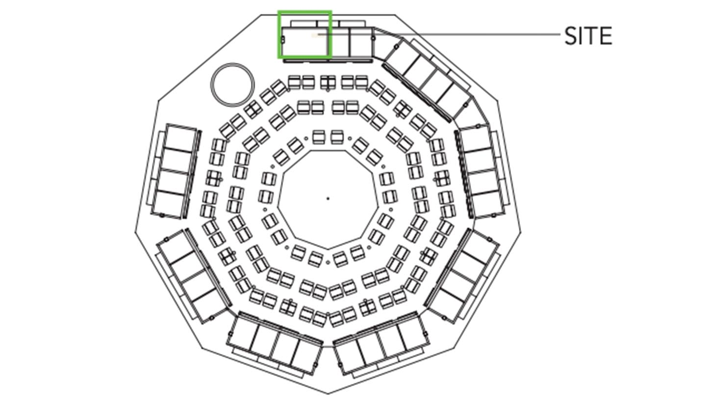
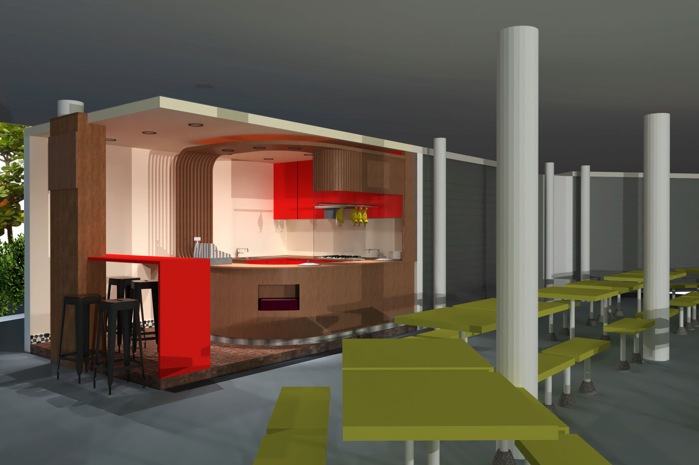
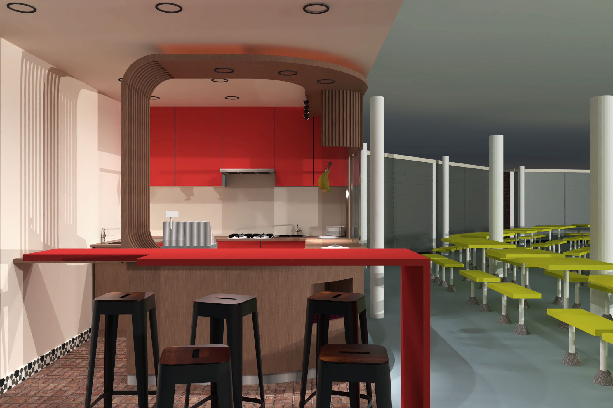
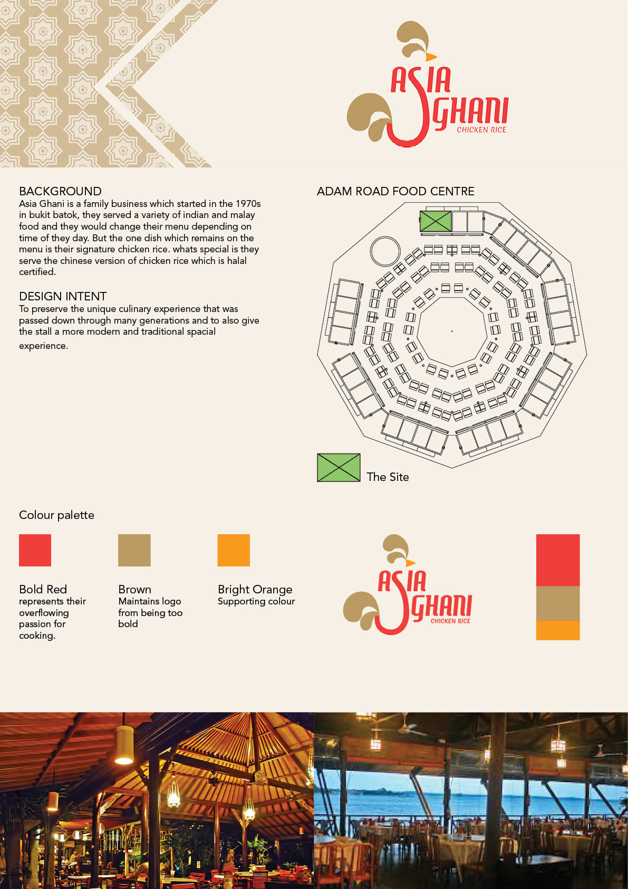

Asia Ghani
Client
Asia Ghani is a family owned business which started in the 1970s in Bukit Batok, they served a wide variety of indian and muslim food and they would change their menu depending on the time of the day. But the one consistent dish that would stay on the menu regardless, was their signature chicken rice. What's special is the halal certified chinese rendition of the chicken rice.
Design Intent
To preserve the unique culinary experience that was passed down through many generations and to give the stall a modern but still traditional spatial experience.


Design Research
Located at Adam Road, Adam Rd Food Centre is home to some of Singapore's best foods. Opened in 1974, the hawker centre is well known for many of their original hawkers from the 1970s — one of them being the famous Selera Rasa Nasi Lemak.
Housing slightly more than 30 stalls, Adam Rd opens from early morning to late night, making it a favorite among residents nearby. The multi ethnic location is a good place for Asia Ghani to open their new stall.

Site plan
Design Concept
By using their brand colours in the space to establish their identity within the site following their dominant, sub dominant and accent colours. With traditional ceramic tiles to give the stall a more traditional and rhythmic feel. Through the opening of the kitchen and the use of a large glass facade, consumers can watch from the start how their food is prepared and served.



Presentation board